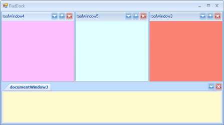

Floating Windows
ToolWindows can reside in docked or floating docking containers. Floating containers are still controlled by the RadDock.
Floating a ToolWindow
There are multiple ways to float a ToolWindow:
Drag the ToolWindow out of the docked container area to an existing floating container.
Drag the ToolWindow to any area within the DockingAssistant other than a drop target icon, the RadDock will create a new floating container with the ToolWindow in it.
Right click the ToolWindow title bar and select Floating from the context menu.
Double-click the title bar.
The screenshots below show DockPanel "Panel 2" being dragged outside of any container and the floating container being created automatically.
|  |  |
Moving a ToolWindow to an Existing Floating Window
You can drag DockPanels to an existing floating container. Select left, right, top, or bottom drop targets to create a split-cell layout, just as you would with a docked container. In the screen shot below "Panel 3" is dragged to the existing floating container for "Panel 2" and dropped onto the downward arrow of the Docking Assistant compass.
|  |  |
Unfloating a ToolWindow
To "un-float" a ToolWindow, drag the title bar to a docked container, or double-click the title bar.
Moving a ToolWindow to a New Docking Container
If you use the drop target icons in the DockingAssistant outer zone, the RadDock will create a new docking container. The ToolWindow that was in a floating container will fill the new docked container. In the screenshot below "ToolWindow5" is dragged from below the right of ToolWindow3" and dropped on the left outer zone of the DockingAssistant compass.
|  |  |
Moving a Floating ToolWindow to an Existing Container
If you use the drop target icons in the inner zone different than the fill option, the RadDock will insert the ToolWindow that was in the floating container into an new docked container. Then, it will rearrange other docking containers within that container to accommodate the new docking container, subject to any minimum or maximum size restrictions. In the screenshot below, "Panel 2" occupies the upper right portion of the screen. A floating panel "Panel 3" is dropped on the inner compass left arrow.

Floating a document window
Document windows can also reside in a floating window. To make a document window float, drag its tab outside of any docking container.
This will create a floating window with the document inside it.
Moving a document window to an existing floating window
You can drag document windows to an existing floating container. Select left, right, top, or bottom drop targets to create a split-cell
layout or select the fill target to create a tab for the document in the existing document container.

Changing the floating behavior
To enable the Visual Studio 2008-like docking behavior, set the SingleScreen property to true. Enabling this property will prevent
document windows from floating and from docking inside existing floating windows.
[C#]
this.radDock1.SingleScreen = true;
[VB.NET]
Me.RadDock1.SingleScreen = True